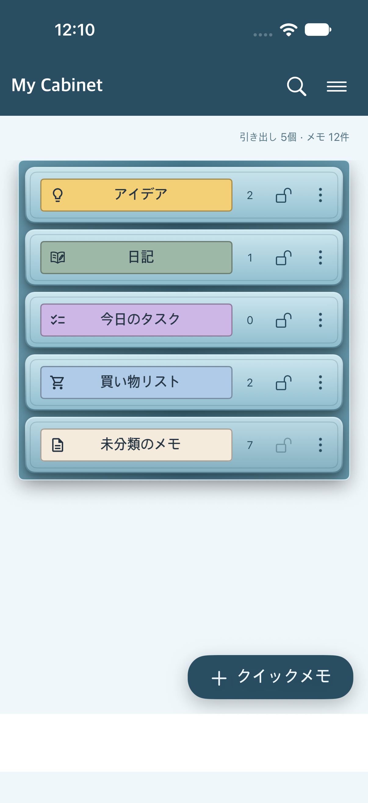
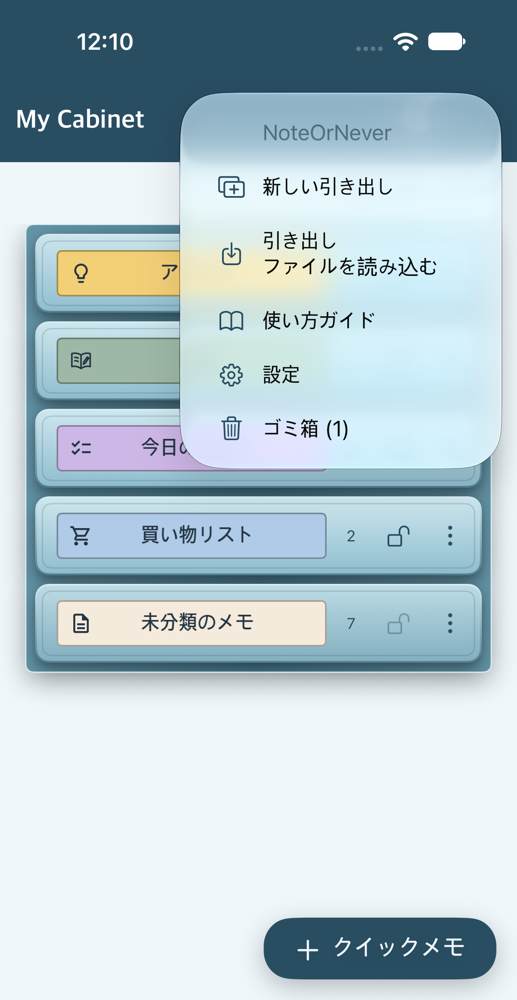
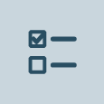
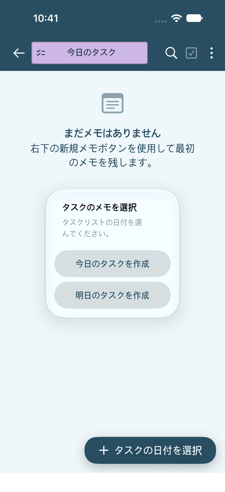
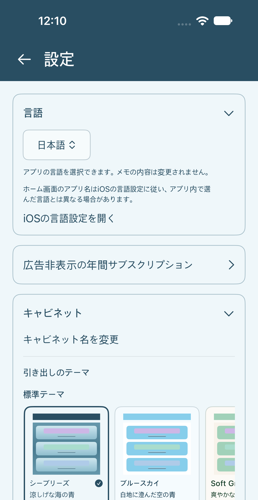

メモしよう 使い方ガイド
バージョン 0.9.37
思いついたことはメモに、今日の予定はタスクに、買いたいものは買い物リストに残しましょう。このガイドは、設定の「使い方ガイド」カードからいつでも開けます。
1.初めての使用と画面構成
メモしようは、テーマ別の引き出しにメモを集めておくアプリです。引き出しを押すとメモリストが、メモを押すと内容を書き込む画面が開きます。

ヘッダーのツールを探す
上部の検索ボタンで引き出し全体を検索します。メニュー（☰）には、新しい引き出し、引き出しのインポート、説明書、設定、ゴミ箱が並びます。キャビネット名は表示されたままです。

最初のメモを作成
メニュー（☰）→新しい引き出しで名前を入力し、引き出しを開いて＋新しいメモを選びます。入力は自動保存されます。
すぐに書き込むには、画面下の＋ クイックメモを押します。未分類のメモから始まり、メモヘッダーの引き出し名で保存したい引き出しを選択できます。
どの引き出しを使用しますか？
| 引き出し | 使用目的 |
|---|---|
| 一般引き出し | アイデア・旅行・業務のようにテーマ別に文・写真・絵・ファイルを集めます。 |
| 日記 | 日付別の履歴を残し、カレンダーまたは履歴のリストに再度読み込みます。 |
| 今日のタスク | 日付別にすること、時間・お知らせ・繰り返し日程と完了かどうかを管理します。 |
| 買い物リスト | 章ビュー別のもの・数量・購入の有無を管理します。 |
| 未分類のメモ | まだ保管する引き出しを決めていないメモを集めます。 |
引き出しの名前を変更する
メニュー→設定→キャビネットを開き、キャビネット名を変更します。空白以外の40文字以内の名前を保存します。同じカードの下にテーマがあります。
ワイドスクリーンとフルスクリーン
タブレットまたは展開されたフォルダブルでは、左の引き出しから引き出しを選択すると、右側にメモのリストが表示されます。メモを開くと、リストと編集画面を並べて表示できます。ヘッダーの全画面ボタンで編集領域を広げ、縮小ボタンで2つの画面に戻ります。
↑目次へ2. 引き出しの作成と管理
新しい引き出しには未使用のラベル色があれば最初に選ばれます。色見本の小さな使用印は他の引き出しと同じ色を示し、その色も選べます。
引き出しを作成
メニュー（☰）→新しい引き出しを選びます。引き出しファイルは同じメニューからインポートします。
名前・ラベル色・アイコンを変える
引き出しの右側にあるもっと見る(…)を押して引き出しの設定を選択します。名前を修正し、色の円やアイコンを選んで保存します。ラベルには、選択したアイコンと引き出し名が一緒に表示されます。長い名前は名前領域内で流れます。
未分類のメモの詳細は、引き出し設定をすぐに開きます。ロックと暗号化は11章で案内されます。
引き出しの並び替え
引き出しを長押しし、上下にドラッグして目的の位置に置きます。未分類のメモの位置は固定です。
引き出しを削除する
引き出しを削除すると、元の所属と添付を保ったままメモがゴミ箱へ移ります。既存の削除日時は変わりません。暗号化は認証後も維持されます。元の引き出しがない通常メモは未分類へ、暗号化メモは同じIDの復旧した暗号化引き出しへ戻ります。他のゴミ箱メモは残ります。
専用引き出しの再作成
日記・今日すること・ショッピングリストは名前やアイコンを変えても専用機能を維持します。削除した専用引き出しは設定→専用引き出しから作成できます。新しく作成した専用引き出しには、古いメモが自動的に戻りません。
↑目次へ3. メモの作成と編集
新しいメモと自動保存
引き出しの中の+新しいメモは現在、引き出しにメモを作成します。 ＋クイックメモは未分類のメモから始まり、最初に保存する前にヘッダーの引き出し名を押して保存する引き出しを選び、選択ボタンで確定できます。今日やるべきことや買い物リストを選ぶと、引き出しに合ったリスト形式に変わります。
保存ボタンなしで入力した変更は自動的に保存されます。戻るには、リストに戻っても作成した内容を再度開くことができます。何も入力していない新しいメモはそのまま閉じてください。 すでに保存されているメモのタイトルや本文を消去するのはコンテンツの修正です。 メモ自体を取り除くには、ごみ箱に移動します。保存に失敗した場合は、内容を確認してもう一度お試しください。
リストを並べ替える
今日のタスクと日記は更新日時ではなく記録日で並びます。日付の新しい順・古い順を選べます。今日のタスクでは重要表示が日付順を変えません。
重要なメモを表示
タイトル右の薄い星（☆）を押すと、塗りつぶされた星（★）に変わります。もう一度押すと解除します。設定→メモビューで重要なメモを最初に表示できます。今日のToDoメモの日付タイトルにメモアスタリスクは表示されません。リスト項目の後ろの星は該当する日・物件の重要表示です。
別の引き出しに移動する
- 一般的なメモを開き、ヘッダーの引き出し名の横に移動アイコンをタップします。
- 移動する通常の引き出しを選択してから、移動ボタンを押します。選択だけでは移動せず、キャンセルすると現在の引き出しを維持します。ロックまたは保護解除の指示が出たら確認します。
今日すること・ショッピングリスト・ダイアリーのメモは他の引き出しに直接移すことができず、移動アイコンを表示しません。複数のメモを一度に移動する方法については、複数のメモを選択するを参照してください。
メモ編集ツールバーアイコンガイド
以下は一般的なメモのツールバーです。明るいアイコンは現在利用できない状態です。文字の書式は、変更する文字を最初に選択して適用します。今日行うこと・ショッピングリストの専用ツールは第6章と第8章で説明します。
上のツールバー：元に戻す、添付、音声
| アイコン | 名前 | すること |
|---|---|---|
 | 元に戻す | 現在の編集中に変更した本文の内容を以前の状態に戻します。元に戻す内容がない場合は、明るく表示されます。 |
 | やり直す | 元に戻した本文の変更を再適用します。再適用する内容がない場合は、明るく表示されます。 |
 | カメラ | 写真を新しく撮影してメモに添付します。 |
 | 写真 | 携帯電話にある写真を選択して添付します。 |
 | 手描き | 白いキャンバスに絵を描き、メモに入れます。 |
 | ファイルの添付 | ファイルを選択してメモに添付します。添付ファイルをタップすると、サポートしているアプリで開くことができます。 |
| 音声入力 | 話した内容を文字で入力します。タイトルまたは本文で音声入力を開始した場所に配置し、選択した文字がある場合はその部分を置き換えます。 | |
 | 録音付き | 声や音を録音し、音声ファイルとして添付します。 STTとは異なり、文字に置き換えません。 |
下のツールバー：文字の書式・リスト・日付
| アイコン | 名前 | すること |
|---|---|---|
 | 太字 | 選択した文字を太字で表示します。もう一度押すと太字のマークが解除されます。 |
| 傾く | 選択した文字を傾けて表示します。もう一度押すと解除します。 | |
| 下線 | 選択した文字に下線を付けます。もう一度押すと解除します。 | |
 | ハイライト | 選択した文字の後に黄色の背景を置いて強調表示します。 |
 | 文字サイズ | 文字サイズメニューを開き、A−に縮小するか、A+で育てます。置き換える文字を最初に選択してください。 |
 | 文字色 | 黒・赤・青の中から文字色を選択します。 |
 | 行間 | 本文の行間隔を増減します。文字サイズを変更する機能とは異なります。 |
 | チェックボックスリスト | 現在の行をチェックリストに置き換えるか、チェックリストの形式を解除します。チェックボックスをタップして完了したかどうかを表示できます。 |
 | 箇条書き | 現在の行をドットで始まるリストに置き換えます。 |
 | 番号付きリスト | 現在の行を番号リストに置き換えます。次の項目の番号は自動的に続きます。 |
| タイムスタンプ | 本文のカーソル位置に現在の日付と時刻を配置します。 |
タイトルにカーソルを置くと、本文の書式設定ツールバーが非表示になり、本文をタップすると再び表示されます。画面が狭い場合は、ツールバーを左右にスライドして他のツールを表示できます。全画面では、両側のツールバーを上下にスライドできます。
1行には、チェックボックス、箇条書き、番号リストの1つの形式のみが適用されます。別のリストボタンを押すとフォーマットが変わります。番号リストでEnterを押すと次の番号が続き、空の項目でEnterを押すとリストが終了します。タイトル・本文と添付の制限は容量と長さ制限で確認できます。
↑目次へ4. 写真・絵・ファイル添付と共有する
写真・録音・ファイルを入れる
一般メモの上のツールバーで、カメラ・写真・ペイント・ファイル添付・録音添付を選択します。必要なデバイス権限を許可して撮影するか、ファイルを選択してください。各ツールの機能と音声入力・録音付の違いはメモ編集ツールバーガイドをご参照ください。
写真・絵の位置を変える
写真右上 もっと見る(…) → 上へ移動・下へ移動に位置を変えます。写真を長押しした後、上下にドラッグしても構いません。表示された線が配置される位置で、画面の端にドラッグすると自動的にスクロールします。現在編集中は元に戻すことができます。
別のメモに添付する
- 移動する写真・絵・録音・一般ファイルの…メニューから別のメモに移動をタップします。
- 受け取るメモのある通常の引き出しを選びます。必要に応じてロックまたは暗号化を解除してください。
- 受信するメモを選択し、[移動]をタップします。検索でメモのタイトルを見つけることもできます。
添付ファイルは1つずつ移動します。元のメモから取り除かれ、移動先のメモの本文末尾に追加されます。日記・今日のタスク・買い物リスト・バックアップなどの専用引き出しは、移動元にも移動先にも選べません。暗号化された引き出しから暗号化されていない引き出しへ移す場合は、保護状態が変わる旨の案内を確認してください。移動や認証をキャンセルすると、添付ファイルは元のメモに残ります。
元のメモを開いている間は、上部ツールバーの「元に戻す」で添付ファイルを元の位置に戻し、「やり直す」で再び移動できます。移動前の編集履歴も保持されます。必要に応じて、ロック解除や暗号化の認証を再度求められます。認証をキャンセルした場合や処理に失敗した場合は、どちらのメモも変更されず、後で再試行できます。メモを閉じると、その編集での元に戻す履歴は消去されます。
大きく見ると回転
写真や写真を押すと大きく開きます。 2本指で拡大・縮小するか、ダブルタップして拡大してください。回転ボタンで方向を変えた後、保存すると メモ内の既存の添付が回転したイメージに変わります。 保存せず、閉じると回転は適用されません。携帯電話のギャラリーオリジナルは変わりません。
絵を描いて写真に表示する
- 空の図は、上のツールバーのペイントから始まります。写真の上に表示するには、写真を大きく開き、[編集]をタップします。
- 色を選び、下のスライダーでペンの太さを決め、キャンバスに描きます。
- 消しゴムをオンにすると、スライダーが消しゴムのサイズに変わります。消しゴムを再びオフにするか、色を選ぶとペンに戻ります。
- 元に戻す・やり直しで現在の画像のストロークを調整します。
- 空の画像は完了、写真の編集はコピーとして保存をクリックするとメモに添付されます。左Xで閉じて変更を捨てると保存しません。
写真に貼り付けて保存すると、新しい添付ファイルのコピーが追加され、既存の添付ファイルが残ります。保存したコピーが気に入らない場合はコピーを削除してください。保存後、そのコピーのストロークを前の編集の元に戻すことはできません。編集・回転保存過程で解像度が低くなることがありますので、高解像度オリジナルは別に保管してください。
読書専用マニュアルと過去日記の写真も大きく見ることができます。読み取り専用状態の拡大画面には閉じるボタンのみが表示されます。
PDFで共有する
- メモを開き、ヘッダーの共有ボタンを押します。
- iOS共有ウィンドウで、カカオトークなどの目的のアプリと受信者を選択します。
タイトル・本文・文字書式・写真・絵をPDFに送ります。受信者はメモしようなしで読むことができます。録音・一般ファイルは名前と種類のみ表示し、元のファイルはPDFに含まれません。共有ウィンドウを閉じても送信されません。送信されたPDFは共有時点のコピーなので、今後のメモ修正は反映されません。
↑目次へ5.日記を記録する
今日の記録続き
日記引き出しを開けたら、今日の記録を続けて作成します。日付は自動的に表示され、短いタイトルを別々に書くことができます。最初の内容を入力すると保存され、記録していない日の空白のメモは作成されません。
過去の履歴を読んで編集する
カレンダーアイコンから履歴のある日を選択するか、履歴リストで開きます。過去の記録は読み取り専用であり、写真の拡大・重要表示・共有・ごみ箱の移動は可能です。
修正ロック解除を押すと、その日の記録を保存する意味を案内します。いいえ読み取り専用を維持し、変更すると、現在開いている履歴の編集が可能になります。閉じて再度開くと、読み取り専用に戻ります。深夜が過ぎてもすでに書いていた記録は、画面を閉じるまで保存できます。
日記は他の引き出しに直接移動しません。ごみ箱から復元しても、記録日は維持されます。引き出しの名前変更と再生成については、引き出しの作成と管理を参照してください。
↑目次へ6. 今日することと時間・お知らせ・繰り返し設定
今日・明日の作成と削除したリストの復元
今日と明日の両方にリストがなければ、＋で日付を選びます。片方だけなければその日の作成ボタンが表示され、両方作成済みなら非表示になります。空のチェック欄だけでは作成済みと数えませんが、添付があれば作成済みです。検索条件はこの判定に影響しません。明日の作成で今日の未完了項目を早めに移すことはありません。

日付のリストを削除しても原本と添付はゴミ箱に残り、自動繰り返しや繰り越しでその日が再作成されることはありません。自分で作成すると新しいリストになります。同じ日付のリストがある場合は現在のリストをゴミ箱に移してから原本を復元してください。一括復元で競合したリストは選択されたまま残ります。過去の上書きは端末の記録で証明できる原本のみ復旧し、現存する添付ファイルのみコピーします。
項目追加・完了・重要表示
- 項目追加（＋）：新しいことを追加します。項目名を書き、Enter キーを押して次の項目を続行することもできます。
- チェックボックス：完了・未完了を変更します。完了した項目にはキャンセルが発生します。
- 項目 もっと見る(…): 時間設定・通知設定・繰り返し設定・重要表示・項目削除を開きます。
- メモにスターを付ける：項目メニューで重要表示をオンまたはオフにします。重要な項目には星が表示されます。日付タイトルの星とは別個です。
- 項目を削除：選択した1行だけを消去します。繰り返し項目をクリアすると、今後の繰り返しも中断されます。メモ全体を消去するヘッダーのごみ箱ボタンと区切ります。
上部ツールとして設定するには、最初に置き換える項目の文字を押してカーソルを放します。時計・種・繰り返しボタンは現在の項目に適用されます。利用できないツールは明るく表示されます。ツールが見えない場合は、ツールバーを左右にスライドさせてください。
アイテムの並べ替え
上部の上・下矢印が重なった項目移動モードをオンにします。アイテムの横に表示されている移動ノブを長押しして上下にドラッグします。移動が終わったら、同じボタンをもう一度押して書き込みモードに戻ります。
予定時間を決める
- アイテム右… →時刻を設定を押します。または項目にカーソルを置き、上部時計ボタンを押します。
- 時間を決めて確認してください。項目に予定時刻が表示されます。
- 削除するには、時間設定を再度開き、時刻なしを押します。
時間を決めるだけで通知は鳴りません。通知が必要な場合は別途設定してください。
通知を受け取る
- アイテム右… →通知設定を押します。
- 予定時間があれば、定刻・10分前・30分前のお知らせを選びます。予定時間がない場合、または別の時刻に受け取りたい場合は、通知時刻を選択を使用してください。
- 保存します。端末で通知権限をリクエストした場合は許可してください。正確な通知を許可する指示が表示されたら、対応するデバイス設定も確認してください。
選択した時点が左円に表示されます。選択リストの下に必要な権限と通知の動作について説明します。解放するには、通知なしを選択します。予定時刻を削除すると、その時刻に基づく通知も解除されます。直接指定した通知時刻は個別に管理します。繰り返し項目に設定した通知は、以降の繰り返しにも適用されます。
通知には、タスクの内容の代わりに確認ガイドが表示されます。機器のお知らせ・節電設定によって到着が遅れる場合があります。カレンダーの予定の通知とアプリの通知は別々ですので、第7章も確認してください。
未完成品はどうなりますか？
繰り返しやカレンダー連携のない未完了タスクは翌日へ移動します。重要度、時刻、通知、数量と繰越回数を保持し、同名の新規タスクと区別します。完了・繰り返しタスク、移動履歴、添付は元の日に残ります。削除した日は自動再作成しません。
繰り返し行うこと
- アイテム名を書き留めてアイテムの… →タスクを繰り返すを押します。
- 毎日・平日・週末・曜日選択から選びます。曜日選択では、希望の曜日を複数選択できます。
- 保存を押します。項目の設定を再度開いて変更できます。
たとえば、木曜日だけを選択すると、木曜日ごとに新しい未完成品が作成されます。前回完了したかどうかにかかわらず繰り返します。
- 完了チェックはその日の完了表示です。その後、繰り返しは続行されます。
- 名前・曜日・重要表示変更は、今日以降未完了の繰り返し項目に反映されます。過去の記録と完了項目は維持します。
- 繰り返さない、またはアイテムを削除は将来の反復を中止し、事前に作成された将来の未完成の反復項目も削除します。
- 数日後にアプリを開くと、今日必要なものを補完します。繰り返しのみの過去の日付リストをすべて作成するわけではありません。
繰り返しアイテムは、未完成の一般アイテムのように毎日翌日に渡されません。同じ名前で別々に作成された繰り返しスケジュールは、それぞれ管理されます。カレンダーにリンクしたアイテムを繰り返し行うことはできません。
↑目次へ7. 携帯電話カレンダーと接続する
携帯電話に接続されているカレンダーの予定を使用します。カレンダーへのアクセスを許可する必要があり、リストに表示されるカレンダーを選択します。ネイバーカレンダー直接連動は提供していません。
| 機能 | 何をしますか？ |
|---|---|
| カレンダーに登録 | メモしようの予定をカレンダーの予定として送信します。以降の更新はカレンダーの予定を変更します。 |
| カレンダーから取り込む | カレンダーの今日の予定を今日することにインポートします。その後、カレンダーでは、更新はメモしようのエントリを置き換えます。 |
やるべきことをカレンダーに登録する
- 今日または明日の予定で、送信するアイテムにカーソルを置き、上部のカレンダーに矢印の付いた登録アイコンをタップします。
- カレンダー・日付・一日中かどうか・開始と終了時間・お知らせを確認して登録します。
- タスクを変更してから同じボタンで更新すると、リンクされている既存のスケジュールが変更されます。
登録した項目には連動表示が表示されます。何を繰り返すかはカレンダーに送信できません。やるべきことを完了したり削除したり、翌日に引き渡しても、すでに登録したカレンダーの予定は保持されます。カレンダーの予定を削除するには、カレンダーアプリをご覧ください。
カレンダーの今日の予定を取得する
- 今日の日付のToDoリストを開き、上部のツールバーでカレンダーと左矢印が描かれたインポートアイコンを押します。ツールが見えない場合は、ツールバーを左右にスライドさせてください。
- カレンダーを選んで、今日の予定中に必要な項目をチェックしてインポートします。
- 最新の内容を再インポートするには、その項目にカーソルを置いて上部カレンダーアイコンをタップします。プレビューのタイトル、時間、場所、カレンダーを確認し、カレンダーで[更新]をタップします。
インポートした予定のタイトルと時間・場所・カレンダー情報を確認できます。時間はタイトルと区別され、終日スケジュールは終日で表示されます。すでに接続されているスケジュールは重複してインポートされません。カレンダーの繰り返し予定は、今日の回差のみを取得します。完了チェックはメモしようによってのみ管理されます。
↑目次へ8. ショッピングリストを使う
- ショッピングリストの引き出しに新しいメモを作成し、ジャンビュー名を書きます。
- 商品名を入力し、項目の後に数量（×数字）を押します。
- −・＋ボタンや数字入力で数量を決めます。デフォルトは1で、1から9999まで入力します。
- 商品を購入したら、前のチェックボックスをタップします。ぜひ買った物は星印をつけてください。
章ビューごとに複数のリストを作成できます。項目の追加と移動モードについては、今日やるべきことのリストツールを参照してください。ショッピングアイテムの後ろでは、数量・星印・削除ボタンをすぐに使用できます。ショッピングリストには繰り返し設定はありません。ウィジェットの使い方はホーム画面ウィジェットを使うを参照してください。
↑目次へ9. ホーム画面ウィジェットを使う
ウィジェットの追加
ホーム画面の空いている場所を長押しします。編集メニューからウィジェットを追加し、NoteOrNever を検索して、今日のタスクまたは買い物リストを選びます。
ウィジェットでできること
- 項目行を押すと完了・未完了または購入・未購入が変わります。
- ＋はアプリのクイック追加画面を開き、そのリストに項目を配置します。
- タイトルまたはメモを開くをタップすると、アプリはそのメモを開きます。
- 星印・繰り返しアイコンは表示用です。重要表示・繰り返し・数量・順番変更はアプリで行います。
今日やるべきことウィジェットは今日の日付のリストを示し、ショッピングウィジェットは最近変更されたアクティブなリストを示します。残りの数は未完了品目数であり、品目数量の合計ではありません。
表示順序
未完了重要→未完了一般→完了重要→完了一般順です。同じバンドル内では、元のアイテムの順序を維持します。ウィジェットのソートはメモ内の順序を変更しません。
ロックされた引き出しのウィジェット
引き出しにロックを設定すると、ウィジェットは内容を非表示にします。アプリで認証してしばらく開いてもウィジェットの隠しは維持されます。アプリを開くことでコンテンツを確認したり、ウィジェットに再表示したい場合は、引き出しのロック設定を解除してください。ロック中も繰り返し項目の日付処理は継続されます。
↑目次へ10. メモの検索とごみ箱の管理
検索範囲
| 検索ボタンの位置 | 探しているもの |
|---|---|
| 引き出し | 複数引き出しの名前とメモタイトル・本文 |
| 引き出しの中 | 現在引き出しのメモタイトル・本文 |
| メモ | 現在のメモの本文で一致する文字 |
引き出しボックスで虫眼鏡をタップして検索語を入力し、結果の引き出しまたはメモをタップします。引き出しの中には、検索語のあるメモだけがリストに残ります。メモの中では、一致する文字を強調し、内容は変わりません。 Xは検索を閉じます。マニュアルの検索はマニュアルを使うで案内します。
ロックされた引き出しは、デフォルトの検索対象から除外されます。ロックされた引き出しコンテンツの検索を含める（認証が必要）をクリックして認証すると、含めることができます。暗号化されたコンテンツも認証後に検索されます。
複数のメモを選択する
- 引き出しのヘッダーで、選択ボタン（チェックマーク）を押します。
- リストから処理するメモを選択します。
- 下部の引き出しを移動するか、ごみ箱に移動をタップします。引き出し移動では、目的地を選択して移動ボタンで確定します。移動可能な通常のメモだけが別の引き出しに移動できます。
タスクの後ろの下の指示に元に戻すと表示されたら、タップして操作を元に戻すことができます。デフォルトの表示時間は約5秒で、アクセシビリティ設定によっては長くなることがあります。選択を終了するには、戻るを押します。
メモをゴミ箱に移動する
メモ編集ヘッダーのごみ箱に移動ボタンを押して確認します。タイトル・本文・添付がない空のメモではボタンが無効になります。項目の後の X は 1 行削除で、メモヘッダーのごみ箱はメモ全体の削除です。
ごみ箱から復元する
- 引き出しヘッダーのごみ箱をタップします。
- メモカードの復元・永久削除ボタンがある行の左側から元の引き出しのアイコンと名前を確認します。復活するメモの復元を押します。必要に応じて、まずメモを開いて内容を確認してください。
- 元の所属の引き出しから復元したメモを確認してください。引き出しを削除したときに未分類のメモに移動したメモは、未分類のメモで確認します。
ロックされた引き出しメモを表示するには、上部のロックされた引き出しメモを含める（認証が必要）と認証します。ごみ箱に移動してから30日が経過すると、添付ファイルが自動的に永久に削除されます。機器の状態によっては、クリーンアップ時間が遅くなることがあります。 30日前に復元するとクリーンアップの対象から除外され、再びごみ箱に移動すると、それから新たに計算されます。
↑目次へ11. 引き出しのロックと暗号化
パスワードの変更や復旧キーによる再設定で以前のセッションは無効になります。新しいセッションは同じ暗号化キーを使い、メモと添付を保って他の端末と同期できます。生体認証は再接続してください。iOSは設定済みの暗号化構成を復旧情報で上書きしません。
| 保護方法 | 違い |
|---|---|
| 引き出しロック | 指紋または4桁のPIN認証でアプリでコンテンツを開く動作を防ぎます。 |
| 引き出しの暗号化 | メモのタイトル・本文・添付を暗号化して保存し、該当資料はバックアップやごみ箱でも暗号化状態を維持します。 |
今日行うこと・ショッピングリスト・未分類メモ・他のアプリ資料を受け取るバックアップ引き出しには暗号化を適用しません。重要な個人記録は、暗号化可能な通常の引き出しに保管してください。今日行うこと・ショッピングリストには基本ロックを使用できます。
基本引き出しロック
設定→引き出しロックでPIN・指紋使用・アプリ切り替え後の自動ロック時間を設定します。引き出しの開いたロックを押すとロックを設定し、ロックされた引き出しを押すと認証して開きます。ウィジェットのロック動作についてはホーム画面ウィジェットを使うを参照してください。
初めて暗号化を設定する
- 保護する一般的な引き出しの詳細→引き出しの暗号化をタップします。
- 12文字以上の暗号化パスワードを2回入力し、[パスワード設定]をクリックします。 4桁のロックPINとは異なるパスワードです。
- 表示されたリカバリキーを、紙やパスワード管理ツールなど、アプリ外の安全な場所に保管します。
- アーカイブ確認をチェックし、パスワード設定を押して完了します。
- この引き出しはまだ暗号化されていないというガイドで暗号化するを押して適用します。
他の引き出しもそれぞれ表示→引き出し暗号化で認証し、保護を適用します。暗号引き出しは同じパスワードを使用するため、最初に設定したパスワードと回復キーを使用します。設定を完了する前にキャンセルした場合は、このリカバリキーを使用しないでください。
シールドバッジとロックマーク
引き出しラベルと引き出し内のタイトルラベルの右上隅にある赤い盾・白チェックバッジは、その引き出しに暗号化が適用されたことを示します。認証して内容を開いても暗号化は維持されるため、バッジは消えません。ロックは認証を経て開かなければならない引き出しという意味で、シールドは資料を暗号化して保存するという意味です。
通常の引き出しを開くと自動ロック
暗号化された引き出しをタップし、接続された指紋または暗号化パスワードで認証します。その引き出しの中では、メモを開閉しても閲覧状態を維持します。引き出しに戻ったり、別の引き出しを選択したり、画面をオフにすると再びロックされたり、別のアプリに移動した場合は自動ロック設定に従います。携帯電話を折りたたんだり展開したりする画面切り替えは、作成中の内容を続けて書き込むための動作です。
指紋接続とパスワード変更
設定→引き出し暗号化で、この電話機の指紋接続・再接続またはパスワード変更を選択して認証します。指紋接続は現在の電話にのみ適用されます。指紋や端末のセキュリティ設定が変わっても利用できない場合は、パスワードで開いて再接続してください。
パスワードの変更はすべての暗号化された引き出しに適用されます。変更前のバックアップを開くには、作成時のパスワードが必要です。変更後に新しいバックアップを作成してください。
パスワードを忘れたとき
- 認証画面のパスワードを忘れましたか？
- アーカイブした復旧キーと新しいパスワードを入力し、パスワードをリセットして[開く]をクリックします。
新しいパスワードはすべての暗号化された引き出しに適用されます。キャンセルすると認証画面に戻ります。復旧キーはアプリで再表示されないため、初期設定時に正確に記録してください。
暗号化保護解除と引き出しの削除
引き出しの詳細を表示→引き出しの暗号化解除で認証し、引き出しの名前を確認して[保護解除]をクリックします。選択した引き出しの素材が暗号化されていない状態で保存されます。キャンセルすると保護を維持します。引き出しを削除するには、保護を解除したら、[その他]で[引き出しを削除]を選択します。
保護範囲の確認
- 引き出し名・メモ個数・作成及び修正日・添付種類は暗号化しません。敏感な内容を引き出しの名前に入れないでください。
- バックアップ全体を暗号化する機能ではありません。暗号化した引き出しの内容だけが保護され、通常の引き出しと本日行う仕事・ショッピングリストは暗号化されません。
- 暗号化前に作成したバックアップや外部アプリに送信したコピーは、自動的に暗号化されません。外部共有ファイルは自分で管理してください。
12. バックアップ・復元とエバーノートのインポート
新しいデバイスに移行
バックアップのみ
最新のバックアップを選択します。復元すると端末のメモと添付が置き換わります。残したい内容をファイルに保存してから全置換を確定してください。
同期データのみ
元の端末と同じアカウントを接続します。同期 → 詳細 → 同期データから復旧を選ぶと、端末の変更を送信せずに取り込めます。
両方ある
先にバックアップを復元します。その後に別の端末から同期された変更がある場合だけ今すぐ同期します。
最後に元の端末のメモを探し、添付も開けることを確認してください。
自動同期とアップロードしない復旧
左上の状態を押すと原因と対処方法が表示されます。幅が狭い場合はアイコンだけになります。無料時は表示されません。
同期状態の見方
同じ添付を使っていても別々のメモは個別に保存されます。初回同期より前に作ったバックアップを復元し、サーバーと内容が異なると、両方が残ることがあります。削除前に両方を開いて確認してください。
要求制限は自動で再試行します。容量不足ならクラウドの空きを増やし、権限を取り消した場合は元のアカウントで再接続します。破損した添付はサーバーから修復を試みます。修復できないメモを保留して他のメモは同期します。変更の前後関係が不明な場合は競合コピーが残ります。
通常の同期では、現在保護されているメモ・引き出しのIDについて、過去の移動・削除を含むすべての履歴を隔離し、ほかの通常データの処理を続けます。隔離した履歴と未送信の変更は端末に保持します。復旧情報の公開中に暗号化の認証が期限切れになった場合は送信待ちを保持し、再認証して同期すると再試行します。実際の復旧情報の検証失敗はエラーとして表示します。
復旧中はメモ・添付・復旧情報をアップロードしません。既存の編集と送信待ちの変更は端末に残り、後で同期すると送信されます。
同期で自動同期をオン・オフにします。今すぐ同期は1回だけ実行され、自動設定は変わりません。受信専用の復旧では端末の変更を送信しません。
暗号化の復旧情報があればパスワードか復旧キーで認証するか、通常データのみを復旧できます。復旧情報のDrive保管状態とメモの送信状態は別です。中断しても完了した段階と未送信の変更は保管されます。同じ処理を再実行してください。保存エラーは内容を確認し、編集中なら保存を終えてから再試行してください。
ローカルファイルにバックアップして復元する
- 設定の下部にあるローカルバックアップと復元を開きます。
- [バックアップファイルの保存]をクリックし、ファイルアプリで保存するフォルダとファイル名を指定します。 .nonbackupファイル一つに引き出し・メモ・ごみ箱・設定と添付ファイルを一緒に保管します。
- ファイルから復元をクリックし、保存したバックアップファイルを選択します。日付と引き出し・メモ・添付個数及び交換案内を確認します。
- [復元]をクリックすると、現在の素材をバックアップ内容に置き換えます。現在の資料との合致は動作ではありません。キャンセルすると適用されません。
- 復元直前の状態は本機に保管してください。最後の復元に戻すことができます。
ファイルへのバックアップはアカウントを接続せずにできます。「ファイル」で「このiPhone内」「このiPad内」やiCloud Driveを選びます。ロックした引き出しの復元には端末のPINを設定し、暗号化した内容のパスワードや復旧情報を保管してください。
iCloud / Google Driveバックアップは手動バックアップです
設定 → クラウド連携 → クラウドバックアップと復元を開きます。保存するには選択したサービスのバックアップボタンを押します。復元するには一覧を読み込み、日付とメモ数を確認して選びます。
引き出し・メモ・添付・繰り返し設定とごみ箱に残っているメモもバックアップに含みます。重要な変更の後ろと電話を交換する前に、新しいバックアップを作成して完了ガイドを確認してください。
バックアップのアーカイブと削除
新しいバックアップが正常にアップロードされ確認されたら、最後の5つを残し、古いバックアップを自動的に完全に削除します。失敗したバックアップのため、既存のバックアップを消去しません。アーカイブ基準は期間ではなく数なので、頻繁にバックアップすると5つすべて最近の資料になることがあります。
直接消去するには、バックアップからリストアとしてリストを開き、消去するバックアップの削除をタップします。ファイル名を確認して永久削除すると、元に戻せません。現在、電話機のメモは消去されません。長期間保管するバックアップは、自動クリーンアップの前に別々に保管してください。
バックアップから復元する
Evernoteのメモを取り込む
- PCのEvernoteアプリから移動するノートやノートブックをENEX（.enex）にエクスポートします。本文暗号化がある場合は、まず解除します。
- ENEXファイルを携帯電話のダウンロードフォルダなどにコピーします。
- 設定→Evernoteメモをインポート→ENEXファイル選択からファイルを選択します。
- プレビューでタイトルと数を確認し、Evernote Noteをインポートをタップします。
- Evernoteからインポートされたメモの引き出しで、内容と添付を確認してバックアップします。
タイトル・本文・チェック表示・基本書式・添付と作成・修正日を取得します。タグとソースアドレスは本文の末尾に表示されます。複雑な表や書式は異なる場合があり、通知・作業・ノートブック構造を自動的に変換しません。必要なメモは他の通常の引き出しで整理してください。
同じ資料は重複をスキップしますが、内容や変更日が変更された資料は別のメモとして追加されることがあります。エバーノートと自動同期したり、既存のメモを上書きしたりしません。元のメモとENEXファイルは削除されません。ファイルが大きいか失敗した場合は、小さなバンドルに分割して最初に試してください。サポート形式はENEXで、制限については容量と長さ制限を参照してください。
あなたが所有またはインポートする権利を持つ資料を選択してください。インポートはデバイス内で処理され、iCloud / Google Driveバックアップを実行すると、インポートされたデータもバックアップに含まれます。元のENEXファイルは引き出し暗号化で保護されていませんので、コピーも管理してください。この機能はエバーノートの公式連携・認証機能ではありません。 Evernote®はBending Spoons US Inc.の商標です。
↑目次へ13. アプリの設定とドキュメントを使う
無料では初期の引き出しを含めて7個までです。7個になると新規作成と取り込みが制限されます。プレミアムでは広告が消え、引き出しの追加、暗号化、クラウド転送が使えます。期限後も既存の引き出しを開き、暗号化した内容を閲覧・復号できます。
設定のクラウド連携で、Apple端末間ならiCloud、Androidとも使う場合はGoogle Driveを選択します。プレミアムで一度に1つの保存先に接続します。クラウドバックアップと復元で手動バックアップ・復元、同期で自動・手動同期を行います。このバージョンでiCloudが利用できないと表示される場合はファイルバックアップが使用できます。購入にはApp Storeの商品登録が必要です。
接続解除後もメモと添付は端末に残ります。以前のバックアップ・同期と同じアカウントで再接続してください。別のアカウントを使う場合は、必要な資料をファイルに保存し、ローカルバックアップと復元で端末データの初期化を確認します。
メニュー→設定→キャビネットを開き、キャビネット名を変更します。空白以外の40文字以内の名前を保存します。同じカードの下にテーマがあります。

アプリ言語
韓国語・英語・日本語・ヒンディー語・ポルトガル語（ブラジル）・スペイン語・インドネシア語をサポートします。言語を変更しても作成したメモの内容は変わりません。
引き出しのテーマ
プレビューカードを左右にスライドさせ、目的のテーマをタップします。デフォルトのテーマはSea Breezeです。基本テーマにはSea Breeze, Blue Sky, Soft Green, Lavender Mist, Korean Paper, Honeycomb, Black and White, Classic Woodがあり、季節のテーマには春、夏、秋、冬、クリスマスがあります。
テーマ色は画面とアプリのアイコンに適用されます。ホーム画面のアプリアイコンは、アプリを出た後に画面の電源を入れ直すと反映されます。ホーム画面のアプリによっては更新が遅れる場合があります。以前にLight OakまたはWarm Walnutを使用していた場合は、Sea Breezeと表示されます。
メモの表示
リストの並べ替え順序と重要なメモ優先順位を設定します。
専用の引き出し
日記・今日のこと・ショッピングリストや他のアプリ資料を受け取るバックアップ引き出しを管理します。実際の引き出し名の横にある鉛筆を押すと、引き出し設定が開きます。削除した専用引き出しは、作成ボタンで再作成します。通常の引き出しは、引き出しヘッダーの新しい引き出しツールで作成してください。
ロック・インポート・バックアップ
引き出しロックと引き出し暗号化は11章、Evernoteのインポートとクラウド・ローカルバックアップおよび復元は12章に使用方法と注意点を集めました。ローカルのバックアップと復元は設定の下部にあります。
取扱説明書を読む・検索・共有
メニュー（☰）→説明書で開きます。目次、本文検索、PDF共有を利用できます。
ヘッダーの検索で検索語を入力すると、一致する部分が強調されます。結果番号と上下の矢印に移動し、Xで検索を閉じます。 共有はマニュアルをPDFに送信します。説明文と画面の例は、設定で選択した言語で表示されます。アイコン画像は共通で使用します。
広い画面では、フルスクリーンボタンでマニュアルを広げて読むことができます。ズームアウトまたは戻るには、2つのスペースに戻り、もう一度戻ると設定に戻ります。狭い画面では、戻るに設定に戻ります。
説明文と共通アイコンはインターネット接続がなくても読めます。説明書を初めて開くと、選択した言語の画面写真だけをダウンロードします。一度ダウンロードした写真は、アプリを開き直してもオフラインで見られます。写真を取得できない場合は、インターネットに接続して写真の再ダウンロードボタンを押してください。ダウンロード前にPDFで共有すると、まだ取得していない写真は含まれません。
説明書を開くたびに写真の更新を確認します。保存済みの写真を先に表示し、新しい写真のダウンロードと検証がすべて終わってから切り替えます。オフラインの場合や更新に失敗した場合も、保存済みの写真を引き続き見られます。
機能が機能しないとき
- カメラ、音声、録音、カレンダーが開かない場合は、デバイス設定で該当するアプリの権限を確認してください。
- カレンダーのリストが空の場合は、携帯電話のカレンダーアプリのアカウントと表示するカレンダーを確認してください。
- やることが通知されない場合は、デバイス設定の通知の許可とスリープ設定を確認してください。
- クラウドバックアップが失敗した場合は、インターネット接続、接続アカウント、保存スペースを確認してください。
- ローカルバックアップファイルが見つからない場合は、ファイルアプリで保存したフォルダと.nonbackup拡張子を確認してください。
容量と長さ制限
| アイテム | 制限 |
|---|---|
| メモタイトル・本文 | タイトル200文字、本文30,000文字。本文10,000文字以上は分けて適期をお勧めします。 |
| 添付容量 | ファイル1つ30MB、1メモの添付全体200MB |
| 添付個数 | 1メモに50枚、そのうち30枚 |
| 写真・絵 | 写真オリジナル4,000万画素。画像編集・回転保存は長辺最大2048ピクセル |
| エバーノートのインポート | ENEX 1つ100MiB(約105MB)、メモ5,000個。インポートしたメモにもタイトル・本文・添付制限が適用されます。 |
| ローカル・Google Drive復元 | バックアップファイル最大2GiB。大きなバックアップには時間と記憶領域が必要です。 |
制限がかかる場合は、案内を確認してメモやファイルを分けてください。録音が30分以上の場合は、分割して保存することをお勧めし、ファイル容量の制限も適用します。バックアップ・復元・添付・暗号化作業の前に電話機の空き容量を確保してください。
↑目次へ